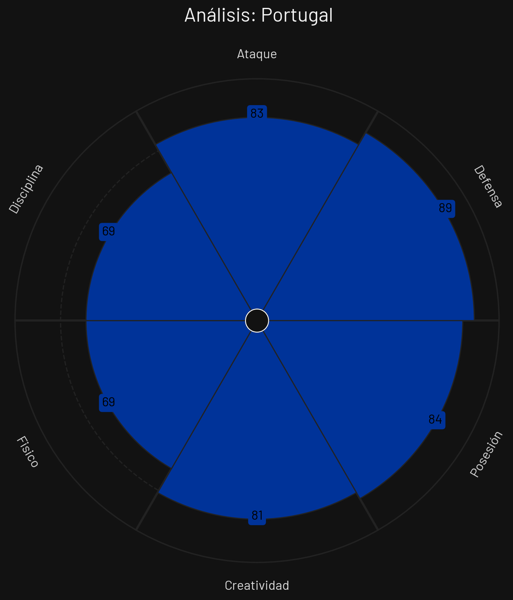
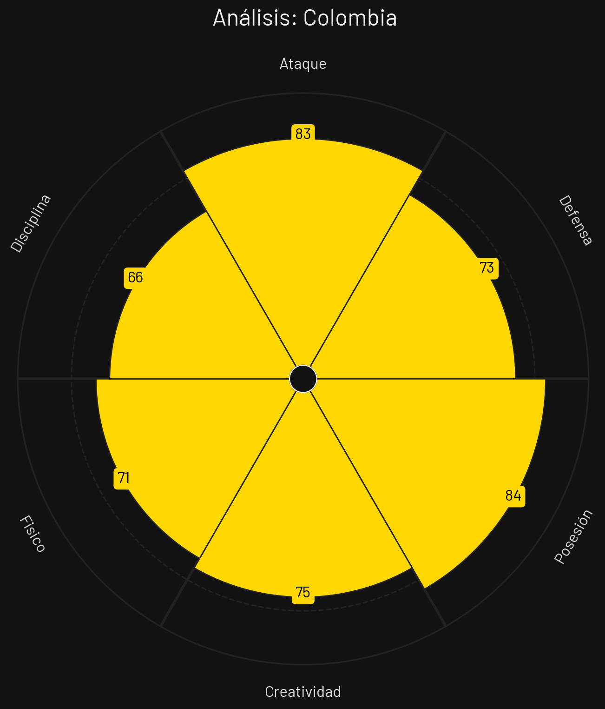
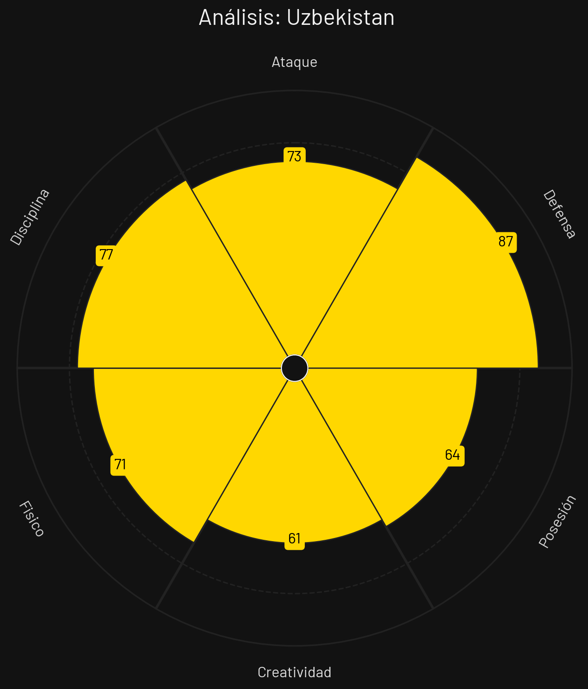
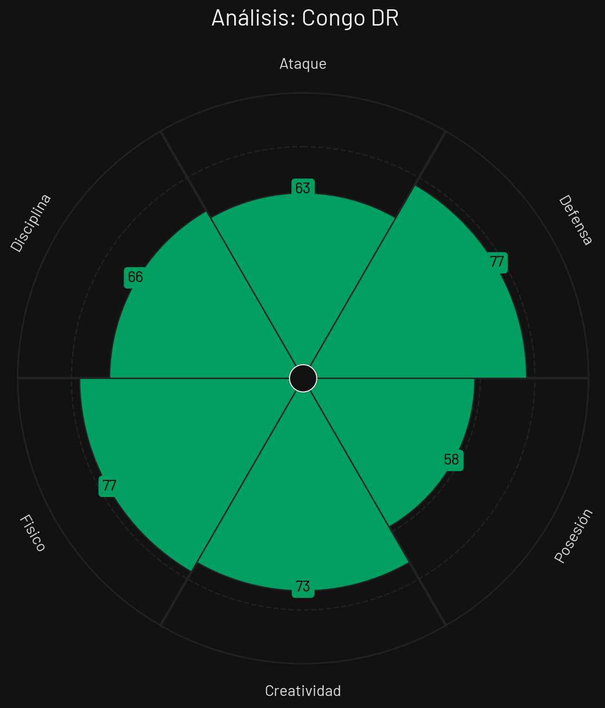

🏆 Tabla de Posiciones
| Pos | Equipo | PJ | G | E | P | GF | GC | DG | Pts |
|---|---|---|---|---|---|---|---|---|---|
| 1 |
 Colombia
Colombia
|
3 | 2 | 1 | 0 | 4 | 1 | 3 | 7 |
| 2 |
 Portugal
Portugal
|
3 | 1 | 2 | 0 | 6 | 1 | 5 | 5 |
| 3 |
 RD Congo
RD Congo
|
3 | 1 | 1 | 1 | 4 | 3 | 1 | 4 |
| 4 |
 Uzbekistán
Uzbekistán
|
3 | 0 | 0 | 3 | 2 | 11 | -9 | 0 |
Portugal

Estilo de Juego e Influencia
Portugal destaca por una posesión estructurada y transiciones de altísima velocidad. Bajo el análisis de IA, se identifican patrones de sobrecarga en carriles interiores combinados con amplitud máxima generada por sus laterales de corte ofensivo.
- Formación Base: 4-3-3 / 3-4-2-1
- xG Promedio: 2.14 por 90 min
- Zona de Presión: Bloque Alto (PPDA 7.4)
- Jugador Clave: Bruno Fernandes
Colombia

Estilo de Juego e Influencia
La selección colombiana resalta por un bloque medio-alto muy compacto y agresivo tras pérdida de balón. La IA destaca el rol clave de sus extremos que recortan hacia adentro y la alta efectividad en jugadas a balón parado.
- Formación Base: 4-2-3-1
- xG Promedio: 1.89 por 90 min
- Zona de Presión: Bloque Medio-Alto (PPDA 8.9)
- Jugador Clave: Luis Díaz
Uzbekistán

Estilo de Juego e Influencia
Uzbekistán muestra una propuesta táctica muy disciplinada y ordenada. Utilizan una defensa de 5 hombres replegada que busca salir rápido mediante juego directo hacia sus delanteros de referencia física, optimizando cada transición.
- Formación Base: 5-4-1 / 3-4-3
- xG Promedio: 0.98 por 90 min
- Zona de Presión: Repliegue Medio (PPDA 11.2)
- Jugador Clave: Eldor Shomurodov
Congo DR

Estilo de Juego e Influencia
RD Congo basa su juego en la solidez defensiva de su bloque bajo y en transiciones verticales sumamente rápidas. La IA identifica que la mayor parte de su generación de peligro proviene de duelos individuales en bandas y contraataques directos.
- Formación Base: 4-4-2 / 4-1-4-1
- xG Promedio: 1.12 por 90 min
- Zona de Presión: Bloque Bajo (PPDA 12.5)
- Jugador Clave: Yoane Wissa
Análisis Técnico: Grupo K - Mundial 2026
Basándome en los perfiles tácticos proporcionados, presento un análisis técnico detallado de los equipos del Grupo K:
📊 Comparativa General de Atributos
| Atributo | ||||
|---|---|---|---|---|
| Ataque | 83 | 83 | 73 | 63 |
| Defensa | 89 | 73 | 87 | 77 |
| Posesión | 84 | 84 | 64 | 58 |
| Creatividad | 81 | 75 | 61 | 73 |
| Físico | 69 | 71 | 71 | 77 |
| Disciplina | 69 | 66 | 77 | 66 |
🔍 Análisis por Equipo
PORTUGAL
Fortalezas
- Defensa Elite (89): La mejor línea defensiva del grupo. Sistema robusto y difícil de vulnerar.
- Ataque Excepcional (83): Capacidad ofensiva consistente y peligrosa.
- Posesión Sofisticada (84): Dominio del balón, control del ritmo del juego.
- Creatividad (81): Recursos para generar opciones de ataque variadas.
Debilidades
- Disciplina relativamente baja (69): Posibles inconsistencias en concentración.
Estrategia: Dominio mediante posesión, presión defensiva inteligente y transiciones rápidas.
COLOMBIA
Fortalezas
- Ataque Dinámico (83): Igual capacidad ofensiva que Portugal.
- Posesión Control (84): Domina el balón como Portugal.
- Creatividad (75): Buena generación de juego ofensivo.
- Capacidad de Resco (71): Recuperación efectiva de balón.
Debilidades
- Defensa Vulnerable (73): La más débil del grupo - Exposición defensiva notable.
- Disciplina Deficiente (66): Baja capacidad defensiva organizada.
Estrategia: Ganar basándose en superioridad ofensiva. Requiere tener posesión para no exponerse defensivamente.
UZBEKISTÁN
Fortalezas
- Defensa Sólida (87): Segunda mejor defensa, muy competitiva.
- Disciplina (77): LA MÁS ALTA DEL GRUPO - Estructura táctica ordenada.
- Ataque Funcional (73): Capacidad ofensiva decente.
Debilidades
- Creatividad Baja (61): Limitado en generar opciones ofensivas.
- Posesión Débil (64): Menor dominio del balón.
Estrategia: Bloque defensivo compacto, buscar efectividad en transiciones directas. Vulnerable ante equipo de mayor posesión.
CONGO DR
Fortalezas
- Defensa Competitiva (77): Defensiva respetable.
- Resco (77): Buena recuperación de balón.
- Creatividad (73): Recursos ofensivos interesantes.
Debilidades
- Ataque Débil (63): LA PEOR CAPACIDAD OFENSIVA - Dificultad para anotar.
- Posesión Baja (58): Menor control del juego.
- Disciplina Deficiente (66): Falta de organización defensiva.
Estrategia: Depender de juego directo y efectividad. Equipo con mayores dificultades para competir.
⚔️ Matchups Clave
🏆 Proyección del Grupo
Clasificación Esperada:
🧠 Análisis Táctico Avanzado
A continuación, se presenta un análisis técnico y cuantitativo del **Grupo K** para el Mundial de Fútbol 2026, evaluando las virtudes, debilidades y el enfoque estratégico de cada selección a partir de sus perfiles estadísticos.
🔍 Análisis Perfil por Perfil
1. Uzbekistán
Al examinar su perfil táctico, la selección asiática se estructura a partir del orden y la protección de su propio arco.
- Fortaleza principal: Su solidez en la última línea, registrando un imponente 87 en Defensa. Esto, sumado a su buen comportamiento táctico marcado por un 77 en Disciplina, los convierte en un rival sumamente difícil de penetrar.
- Área de mejora: La elaboración de juego y el volumen ofensivo. Con apenas 64 en Posesión y un 61 en Creatividad, son el equipo al que más le cuesta generar circuitos de pases y proponer el ritmo del partido.
2. Colombia
De acuerdo con sus datos, el combinado sudamericano propone un juego muy asociativo, de tenencia y con una alta vocación para mirar al arco rival.
- Fortaleza principal: Un excelente control del balón avalado por su 84 en Posesión y una ofensiva letal de 83 en Ataque. Es un bloque diseñado para jugar en campo contrario y lastimar a través de secuencias de pases.
- Área de mejora: Su estructura defensiva y el control emocional. Su Defensa de 73 es claramente superada por su nivel de ataque, y su baja Disciplina de 66 indica que pueden desordenarse rápidamente o cometer faltas tácticas innecesarias al perder el esférico.
3. República Democrática del Congo
El perfil del conjunto africano muestra una propuesta netamente reactiva, priorizando el despliegue atlético y el rigor en la marca por encima del control.
- Fortaleza principal: Su capacidad para sostener duelos a través de un destacado apartado Físico de 77 y una Defensa bastante respetable de 77. Mantienen además una Creatividad de 73, lo que les permite trazar contragolpes con cierta inventiva cuando recuperan el balón.
- Área de mejora: La contundencia en el área rival y el control de los hilos del partido. Son el equipo con los registros más bajos en Posesión (58) y Ataque (63) de todo el grupo, lo que evidencia grandes dificultades para tomar la iniciativa de forma sostenida.
4. Portugal
La escuadra europea se presenta como el gigante estadístico indiscutible del grupo, dominando la inmensa mayoría de las métricas fundamentales del juego.
- Fortaleza principal: Su absoluta superioridad técnica, táctica y estructural. Lideran el grupo en Defensa con 89, en Creatividad con 81, y empatan en la cima de Ataque (83) y Posesión (84). Son un equipo maduro y altamente capacitado en todas las fases con balón.
- Área de mejora: El desgaste frente a la fricción. Su registro más bajo es el Físico (69), por lo que un rival que plantee un partido de mucho choque o que imponga un ritmo asfixiante de transiciones podría llegar a incomodar su habitual circulación.
⚡ Dinámica Táctica del Grupo
La configuración del Grupo K plantea un escenario de claro dominio europeo y sudamericano en la tenencia, frente a bloques diseñados para resistir y contraatacar: